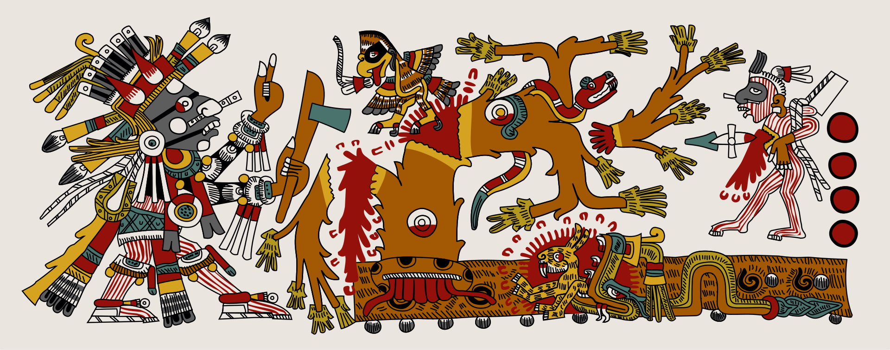

En el relato de la cosmogonía náhuatl, la creación del universo, se menciona que en un principio solo existía un cielo, que llamaron el décimo tercero, en el que vivía una pareja divina, Ometecuhtli y Omecíhuatl, que procreó cuatro hijos, el primogénito fue Tlatlauhqui-tezcatlipoca (Tezcatlipoca Rojo), adorado particularmente por los tlaxcaltecas y huejotzincas bajo el nombre de Camaxtli, pero asimilado por los mexicas como Xipe Tótec, "Nuestro Señor El Desollado"; el segundo hijo fue Yayauhqui-tezcatlipoca (Tezcatlipoca Negro); el tercero fue Iztauhqui-tezcatlipoca (Tezcatlipoca Blanco), asimilado por los mexicas como Quetzalcóatl; el cuatro fue Xoxoauhqui-tezcatlipoca (Tezcatlipoca Azul), asimilado por los mexicas como Huitzilopochtli.
Estos cuatro dioses, después de 600 años de inactividad, se reunieron y conferenciaron acerca de lo que debían ordenar y de las leyes que debían imponer a lo que creasen, y puestos de acuerdo, comisionaron a Quetzalcóatl y Huitzilopochtli la responsabilidad de crear al Medio Sol, que alumbraba poco por no ser entero.
Los númenes mexicas se transforman, multiplican su personalidad para poder cumplir con todas sus acciones divinas, de esta manera una deidad puede ser benévola o malévola, ser la madre de su propia abuela, destruir lo que ha procreado, ser dinámica y estática, omnipresente, ubicua, ambivalente, polifacética, y por lo tanto tener tantos nombres como acciones realice, y tantas características como su naturaleza lo requiera.
Los nahuas tenían varios mitos de la creación, resultado de la integración de distintas culturas. En uno de ellos, Tezcatlipoca y Quetzalcóatl se dan cuenta de que los dioses se sentían vacíos y necesitaban compañía. Por ello necesitaban crear la tierra. Existía solo un inmenso mar, donde vivía Tlaltecuhtli, el monstruo de la tierra. Para atraerlo, Tezcatlipoca ofreció su pie como carnada y el monstruo salió y se lo comió. Antes de que pudiera sumergirse, los dos dioses lo tomaron y lo estiraron para dar a la tierra su forma. Sus ojos se convirtieron en lagunas, sus lágrimas en ríos, sus orificios en cuevas. Después de ello, los dioses le dieron el don de la vegetación para confortar su dolor. Y posteriormente se dio a la tarea de crear a los primeros hombres.
Aun así, los dos astros siguen inertes en el cielo y es indispensable alimentarlos para que se muevan. Entonces otros dioses deciden sacrificarse y dar el "agua preciosa" que es necesaria para crear la sangre. Por lo tanto, se obliga a los hombres a recrear eternamente el sacrificio divino original.
La historia de la alimentación, las formas en las que se producen, se elaboran y se consumen los alimentos; están ligadas con las costumbres y cultura de una sociedad que nos da cuenta de la historia de un pueblo.
Los antiguos pobladores de nuestro país, fueron profundos conocedores de la naturaleza y tuvieron una relación armónica con ella, así lo demostraron en los amplios conocimientos reflejados en la astronomía, la botánica, la agricultura y la arquitectura, entre otros.
En algunos relatos interesantes sobre la Nueva España, encontramos la descripción precisa del tipo de alimentos que se consumían y se exhibían en los grandes mercados como el de Tlatelolco (cuyo nombre en náhuatl es Tlaltetelli), el de Monte Albán o el de Juchitán, destacando la variedad y colorido.
Numerosos pescados y mariscos, manatí, caracol de río, más de 247 especies de insectos, gallinas, gallos de papada (guajolotes), faisanes, perdices, codornices, patos, venado, jabalí (puerco de la tierra), pájaros de caña, palomas, ardillas, liebres y conejos, perros (llamados tlalchichi), topos, ratas de campo, ranas, armadillos, monos, tepezcuintles, iguanas, tortugas y serpientes.
Quelites, quintoniles, maíz, cacao, frijoles, semilla de amaranto o alegría (huauhtli), chile de diferentes especies, pepitas de calabaza, papas de varios tipos, aguacates, chilacayotes, huauzontles, nopales, alga espirulina, yerba santa o acuyo, achiote, la herbácea conocida como chipilín, epazote, palmitos, vainilla, chaya, jitomate, tomate, cebollín, ejotes, hongos, algas, verdolagas, malva, mezquite, flor de colorín, xoconostles y chayotes.
Piña, plátano, chirimoya (anona), mamey, guayaba, peruétano, zapote amarillo, negro y blanco, papaya, guanábana, chicozapote, chirimoya, más de 20 variedades de ciruela, nanche, pitahaya, uva silvestre (totoloche), tuna, mora, cacahuate y capulín.
La cocina prehispánica, incluía varios guisos cotidianos y comidas de temporada que se servían en las principales fiestas en honor a los dioses, así como a los diferentes cultivos agrícolas que se relacionaban con el clima de las estaciones del año.Tenían varias formas de endulzar los alimentos por medio de mieles de maíz, de maguey, de abeja y de otros vegetales. Entre las bebidas consideradas en rituales, destacaban el chocolate y el pulque, respectivamente.Los antiguos mexicanos cocían sus alimentos de diversas maneras: asados directamente a las brasas y con leña, como el caso de animales; o sobre comales de barro, como las tortillas; hervidos, en el caso de algunas verduras; o cocidos al vapor, como los tamales, los cuales incluso se asaban con todo y hoja. Otra forma muy característica es el caso de la barbacoa que hoy en día se sigue preparando envuelta en hojas vegetales y cocida en un hoyo bajo el suelo, cubierto de tierra, calentado con leña, y piedras que absorben y mantienen el calor.
Los habitantes del México prehispánico desarrollaron las plantas que hicieron posible una dieta equilibrada, destacando las más de 40 especies de maíz, (en náhuatl "Tlaolli") que fue una de las principales aportaciones de nuestro continente al llamado viejo mundo (Europa). Se dice que es el alimento básico de la mayor parte de los pueblos antes de las conquista, que además de ser considerado sagrado, se convirtió en la tortilla, base de nuestra actual alimentación.Entre otros alimentos preparados con maíz, destacan: atole, pinole, tlacoyo, tamal, pozole, chicha y ezquite, de éste, no sólo se utilizan sus granos, además como derivado del maíz encontramos el huitlacoche, hongo altamente apreciado; las hojas de la mazorca para envolver tamales, quesos y requesones, miel de tuna, pescados, etcétera, práctica que permanece casi intacta hasta nuestros días.